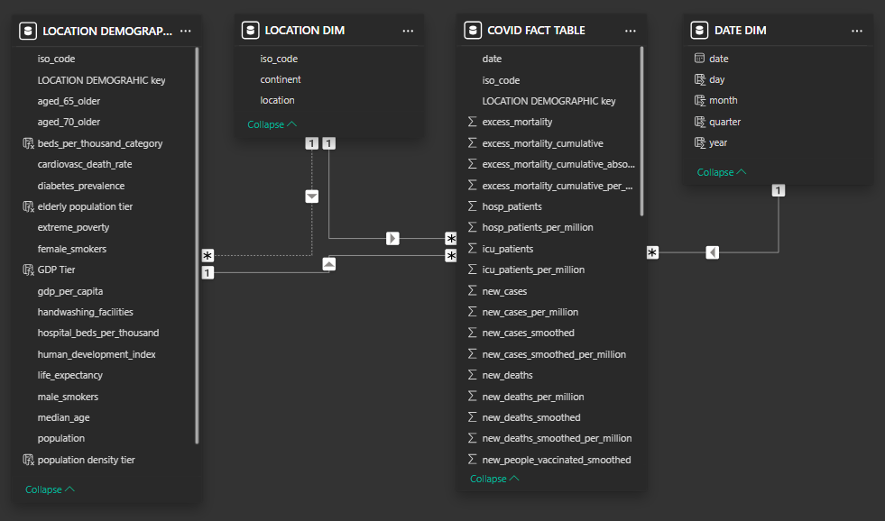
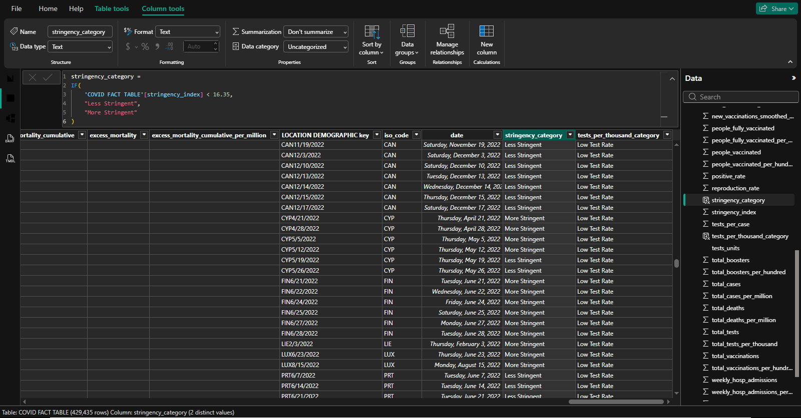

Exploring the "GDP Paradox," healthcare capacity, and the impact of government stringency on pandemic mortality.
Understanding the spread and impact of COVID-19 requires looking beyond just case counts. Stakeholders and public health officials needed to know how external factors—such as a country's GDP, population density, available hospital beds, and government lockdown stringency—correlated with mortality and recovery rates.
Sourcing raw CSV data from Our World In Data, I executed an end-to-end analysis exclusively within Power BI. I built a complex hybrid Star/Snowflake schema data model, standardizing the data and engineering custom DAX measures. By categorizing continuous data into discrete analytical tiers (e.g., Stringency Category, Testing Rates), I enabled deep correlation analysis using scatter plots and trend lines.
Power BI dashboards showing trends in cases and deaths, demographic impacts, vaccinations, and testing outcomes.
(Use arrow keys or buttons to navigate • Click any image to view full size)
Raw CSV (Our World In Data) → Power BI → Hybrid Star/Snowflake Schema Data Modeling → DAX Categorization → Visual Analytics & Reporting.
Raw CSV → Power BI → Schema → DAX → Analytics
Here's a glimpse into the technical work that powers this project:

Power BI Data Model View

Power BI Table View
Here's a sample of the DAX code used to categorize continuous data into discrete analytical tiers for deep correlation analysis:
// Categorizing continuous index scores into discrete analytical tiers using DAX
stringency_category =
IF(
'COVID FACT TABLE'[stringency_index] < 16.35,
"Less Stringent",
"More Stringent"
)
// Categorizing test rates using DAX
tests_per_thousand_category =
IF(
'COVID FACT TABLE'[total_tests_per_thousand] < 1,
"Low Test Rate",
"High Test Rate"
)
Here's what was achieved and learned:
GDP vs. Mortality Correlation
Global Vaccine Peak
COVID-19 Total Deaths
People Fully Vaccinated